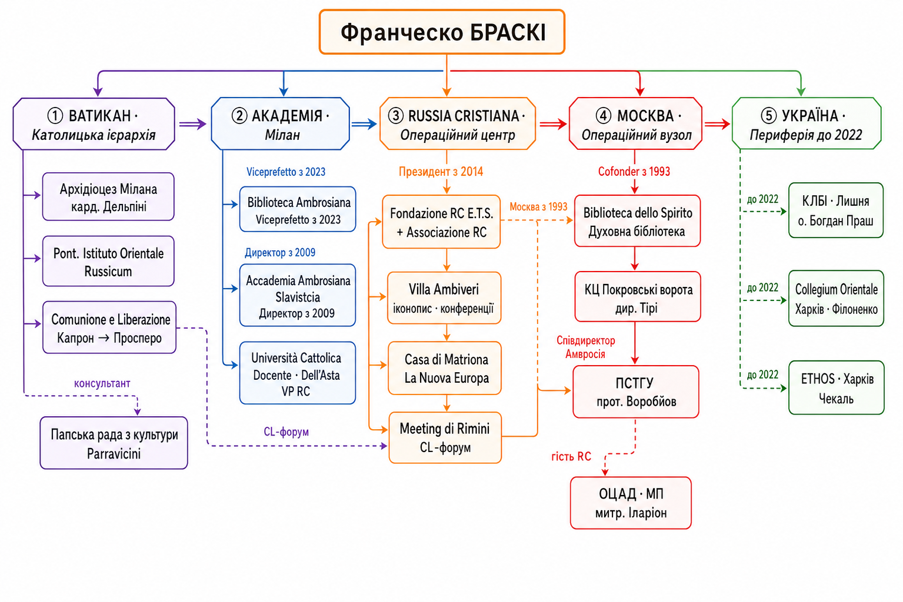

Мережа м'якої сили: Браскі, Овчинніков, Україна
Виявлено багаторівневу інституційну мережу навколо Francesco Braschi (Biblioteca Ambrosiana, Мілан) та фонду Russia Cristiana (засн. 1957), що функціонує в Україні з 2007 р. Ядром мережі є Центр св. Климента (Київ) під керівництвом проф. НаУКМА Костянтина Сігова. Технічний архітектор — харківський дизайнер Олексій Чекаль, автор графічного стилю ПЦУ.
Фонд Russia Cristiana (раніше — Centro Studi Russia Cristiana) заснований у 1957 році в Мілані католицьким священником о. Романо Скальфі (1923–2016). Початкова мета — «розкрити для християн Заходу сутність літургійної традиції та культури слов'янських народів».1
Ідеологічний фундамент. Скальфі відвідав СРСР «40–50 разів» починаючи з 1970 р., під контролем КДБ (сам називав агента «ангел-охоронець»).2 Його передсмертний завіт: «Любите Россию, несмотря ни на что».1
База фонду — Вілла Амбівері, м. Серіате (Бергамо, Іт.): іконописна школа (з 1978 р., перша в Італії), домова церква, видавництво «La Casa di Matriona», альбоми-календарі (42 випуски).
У 2004 р. RC відкрила Культурний центр «Покровські ворота» (колишній особняк Боткіних, Покровка, 27 — у радянський час там розміщувався слідчий відділ НКВС).3 Статистика: 200 заходів/рік, 10 тис. відвідувачів. Директор — Жан-Франсуа Тірі (Бельгія); наукова співробітниця — Джованна Парравічіні, одночасно аташе з культури Посольства Ватикану в РФ.
Після смерті Скальфі (25.12.2016) Франческо Браскі очолив фонд. Браскі — водночас: президент RC, віце-префект Biblioteca Ambrosiana (Мілан), проф. Università Cattolica del Sacro Cuore, директор Класу славістики Accademia Ambrosiana.
Meeting di Rimini — щорічний фестиваль руху Comunione e Liberazione, 800 тис.+ відвідувачів/рік. Russia Cristiana присутня з 1982 року — 44 роки безперервної присутності (до 2018+).6
| Рік | Назва виставки | Ключовий зміст |
|---|---|---|
| 1982 | L'icona immagine dell'invisibile | Перша виставка ікон. Школа іконопису Серіате |
| 1986 | Samizdat | Самвидав країн Схід. Європи; цитата Солженіцина |
| 1988 | Mille anni di fede nella Rus' | 1000-ліття Хрещення — подається як «русская» подія (Україна відсутня) |
| 1993 | Bagliori russi dell'oriente cristiano | 27 фресок-копій А.М. Овчинникова + ікони Пскова XV–XVI ст. |
| 1997 | Fedor Dostoevskij | Найбільша виставка Meeting того року |
| 2006 | Padre Aleksandr Men' | О. Олександр Мень — убитий священик |
| 2008 | Vivere senza menzogna. Solženicyn | Солженіцин; спільно з Фондом Солженіцина (Москва) |
| 2013 | «Свет сияет во тьме» (ПСТГУ) | Дизайн: Олексій Чекаль; студенти Харків/Київ у Москві |
| 2014 | Виставка «Свідчення про Київ» | Куратор: К. Сігов; RC використовує Київ як тему |
| 2018 | Amare la Russia nonostante tutto | Пам'яті Скальфі. Слоган — дослівний повтор його завіту |
RC проводила щорічні академічні конференції в Серіате (Бергамо) з 1997 р. З 2012 р. — «дзеркальний» формат: одночасно в Італії та Москві.7
| Рік | Тема | Місця |
|---|---|---|
| 1997–2009 | Богословські та культурологічні теми | Серіате |
| 2010 | «Богословіє общенія» — перша рос. мовна програма | Серіате; Браскі + О. Філоненко |
| 2012 | East~West: crisis as challenge | Мілан + Москва (перший дзеркальний) |
| 2013 | Identity, alterity, universality | Серіате + Москва |
| 2014 | Tolstoj and his time | Бергамо + Москва |
| 2016 | Il dono inatteso della misericordia | Серіате + Москва |
| 2018 | Uomini liberi. Культура самвидаву | Серіате + Москва; за участю «Меморіал», Архангельський |
| 2020 | Una Rete che imprigiona... Pandemia | Онлайн |
Художник-реставратор ВХНРЦ ім. Грабаря. Куратор виставки ікон у Ватикані (1989–90). Іконопис у школі Серіате протягом 7 років (1990-ті). Написав іконостас для домової церкви вілли Амбівері. Виставка 27 фресок на Meeting 1993.4
Ключова точка: 2005 р. — поїздка до Сирії з Олексієм Чекалем (вивчення візантійських фресок). Це момент входу Чекаля в мережу RC.
Одночасно: аташе з культури Посольства Ватикану в РФ; наук. співробітниця КЦ «Покровські ворота»; куратор/гол. редактор альбомів-календарів RC (36/42); перекладачка Овчинникова; організатор московських конференцій.5
Проф. НаУКМА, директор видавництва «Дух і Літера», засновник Центру св. Климента (Київ, 2007) — головний організаційний хаб мережі RC в Україні. Особистий друг Браскі («дорогой отец Франческо», 2016). Прямих проросійських заяв не виявлено.
Харківський дизайнер (нар. 1973). Вхід у мережу RC: 2007 — дизайн сайту Центру св. Климента. Дизайн виставки ПСТГУ на Meeting di Rimini 2013. 2018 — логотип і графічний стиль ПЦУ (Об'єднавчий собор).
2021–2025 — дизайнер виставок Будинку російського зарубіжжя ім. Солженіцина (Москва, партнер «Русского міра»): квітень 2022 — дизайн у Феодорівському соборі РПЦ (Санкт-Петербург), через 6 тижнів після вторгнення; квітень 2025 — виставка у ПСТГУ.
Самовиправдання: «неофітські помилки». Проблема: 47–52 роки, 20+ років досвіду, виставка 2025 не «інерція».

| Дата | Подія | Контакти | |
|---|---|---|---|
| ~2005 | 🇷🇺 | Перші контакти з ПСТГУ, Москва | — |
| 2010.08 | 🇺🇦 | VIII Київський літній богословський ін-т (лектор), Лишня | К. Сігов |
| 2010.10 | 🇮🇹 | Конф. RC «Богословіє общенія» — перша рос. мовна програма | О. Філоненко(?) |
| 2013.03 | 🇷🇺 | Семінар ПСТГУ: іт. + укр. студенти (Харків/Київ) у Москві | Ректор ПСТГУ |
| 2013.07 | 🇺🇦 | XI КЛБІ, Лишня | О. Філоненко |
| 2013.08 | 🇮🇹 | Виставка «Свет сияет во тьме» (ПСТГУ), Ріміні; дизайн: Чекаль8 | Чекаль, ПСТГУ |
| 2014.08 | 🇮🇹 | Виставка «Свідчення про Київ», Ріміні | К. Сігов |
| 2015.06 | 🇮🇹 | Прийом митр. Іларіона (Алфєєва) в Амброзіані | Іларіон Алфєєв |
| 2015.09 | 🇺🇦 | Конференція з Іларіоном у Києві — під час АТО! | Іларіон Алфєєв |
| 2016.04 | 🇺🇦 | «Дух і Літера», Київ | К. Сігов |
| 2017.03 | 🇷🇺 | Концерт-свідчення про Скальфі, КЦ «Покровські ворота»1 | Парравічіні, хор RC |
| 2022.03 | 🇷🇺 | Конф. РПЦ (Ярославль) — під час боїв за Київ!12 | РПЦ |
| 2022.11.14 | 🇷🇺 | Лист ректору ПСТГУ Воробйову — ініціатива відновлення співпраці | В. Воробйов |
| 2024.02 | 🇷🇺 | Фестиваль ПСТГУ, Москва — сюжет НТВ13 | П. Хондзінський |
| 2024.12 | 🇷🇺 | Виставка Овчинникова в «Покровських воротах»4 | Парравічіні, Горматюк |
Після 24.02.2022 Russia Cristiana та особисто Браскі не припинили жодної діяльності в РФ. Навпаки — активізувалися:
Russia Cristiana — не аматорський культурний проект. Факти: 44 роки безперервної присутності на Meeting di Rimini (1982+); КЦ «Покровські ворота» — нерухомість у центрі Москви (відреставрована, куплена); 8+ штатних співробітників; щорічні конференції в двох країнах (2012–2018); альбоми-календарі на 5 мовах; паралельний доступ до Ватикану та РПЦ через одну людину (Парравічіні).
Жодного випуску альбомів-календарів про Україну. Всі 20+ виставок — «русская» тематика від Сибіру до Києва. Виставка 1988 «Mille anni di fede nella Rus'» — 1000-ліття Хрещення як «русская» подія. Парравічіні: «Захід і Схід — єдиний християнський простір, який говорить однією мовою». Наратив RC: Україна = частина «Русі» (в їхньому розумінні — Росії), не окрема культурна сутність.
Точка входу Чекаля в мережу RC — Сирія 2005 з Овчинниковим. Через цей зв'язок: дизайн матеріалів ПСТГУ (2013), дизайн сайту Центру св. Климента, зрештою — логотип ПЦУ (2018). Один і той самий дизайнер формує візуальний код і для проукраїнської православної структури, і для московських інституцій одночасно.